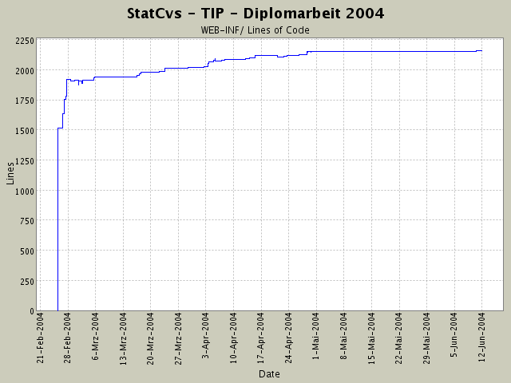

Summary Period: 2004-02-25 to 2004-06-11
[root]/WEB-INF
 javadocTemplates
(3 files, 52 lines)
javadocTemplates
(3 files, 52 lines)
 lib
(27 files, 0 lines)
lib
(27 files, 0 lines)
 src
(1 files, 0 lines)
src
(1 files, 0 lines)
 de
(0 files, 0 lines)
de
(0 files, 0 lines)
 fub
(0 files, 0 lines)
fub
(0 files, 0 lines)
 tip
(2 files, 100 lines)
tip
(2 files, 100 lines)
 actionforms
(4 files, 563 lines)
actionforms
(4 files, 563 lines)
 actions
(12 files, 1696 lines)
actions
(12 files, 1696 lines)
 admin
(4 files, 384 lines)
admin
(4 files, 384 lines)
 debug
(2 files, 142 lines)
debug
(2 files, 142 lines)
 datenanzeige
(4 files, 411 lines)
datenanzeige
(4 files, 411 lines)
 beans
(2 files, 177 lines)
beans
(2 files, 177 lines)
 container
(6 files, 569 lines)
container
(6 files, 569 lines)
 ormapper
(14 files, 1859 lines)
ormapper
(14 files, 1859 lines)
 datenbank
(3 files, 282 lines)
datenbank
(3 files, 282 lines)
 factory
(13 files, 697 lines)
factory
(13 files, 697 lines)
 logik
(11 files, 3523 lines)
logik
(11 files, 3523 lines)
 exceptions
(8 files, 281 lines)
exceptions
(8 files, 281 lines)
 resources
(4 files, 912 lines)
resources
(4 files, 912 lines)

Total Lines Of Code:
2160 (2004-06-13 13:05)
| Author | Changes | Lines of Code | Lines per Change |
|---|---|---|---|
| hirsch | 174 (100.0%) | 3206 (100.0%) | 18.4 |
Anpassung der RessourceBundles an neue Seiten
- data/anzeige/sight/information.jsp und eventarea.jsp
4 lines of code changed in:
Anpassen des Verweises - vll. wird die NullPointerException auch
durch Verweis ausgelöst ... hoffentlich wird inspectvariables.jsp ausgeführt
3 lines of code changed in:
Umlaut in strutsconfig hat Absturz verursacht - MIST!
Ansonsten Fehlerchen in Javadoc angepasst (void Methoden hatten @return-Tag)
4 lines of code changed in:
Informationsanzeige: Klassenrümpfe erstellt und in Config eingebunden.
EclipseProbleme (100 %CPU) bleiben wieder.
6 lines of code changed in:
Datenbank hat jetzt ein Passwort und nen neuen Admin (juergen bross).
2 lines of code changed in:
ActionForm kann sowohl für die Anzeige des Themen- als auch des Sehenswürdigkeitsgruppenprofils benutzt werden.
2 lines of code changed in:
Leere Rümpfe hingeschrieben,
die ActionMessage zur Ausgabe erzeugen und
prüefen, ob die Parameter (slektierte gruppen) übergeben werden.
3 lines of code changed in:
Namenskonventionen eingehalten ... die ActionKlassen heissen
jetzt auch wieder xyzAction!
8 lines of code changed in:
Umwandlung der UebernehmenAction in eine fuer jede Profiluntergruppe:
* Sehenswuerdigkeitsgruppen
* Themengruppen
3 lines of code changed in:
Umbenennung/ Refactoring der Action zur ANzeige der Profilinformationen zur weiteren
Bearbeitung
3 lines of code changed in:
in strutsconfig.xml hat bei der DispatchUebernehmenAction ein
parameter="method" gefehlt!
2 lines of code changed in:
letzter Versuch:
Uebernehme, was vorher eine Action war und super ging, wird jetzt zur
DispatchAction mit Methode changeprofilsgroup ... jetzt sehen, ob der gleiche Fehler bei Verweisen
darauf kommt.
2 lines of code changed in:
alte UebernehmenAction rausgenommen, um zu testen, wie sich
DispatchAction verhält:
jetzt sind die weiterleitungen (actionforwards) sowie der quellcode in der
action.execute()-Methode gleich.
3 lines of code changed in:
UebernehmenAction war nicht sauber in strutsconfig drin
3 lines of code changed in:
es taucht eine Action auf, die nicht da sein dürfte! rausnhemen aus
struts-config.xml
3 lines of code changed in:
Andere Action wenn Dispatch nicht klappt!
5 lines of code changed in:
bei den actions hat das
name="sigtgruppeForm" gefehlt, was die Verbindung zur
Action beinhaltet.
2 lines of code changed in:
form bean kann nicht ausgelesen werden -> ist null,
anpassung der weiterleitung...
2 lines of code changed in:
Target war nicht richtig beendet.
3 lines of code changed in:
Umstellung auf neues Ziel warfast, was nur die WAR-Datei ohne Doks (javadoc, j2html, statcvs) erzeugt
31 lines of code changed in:
(84 more)
Generated by StatCvs v0.2-dev